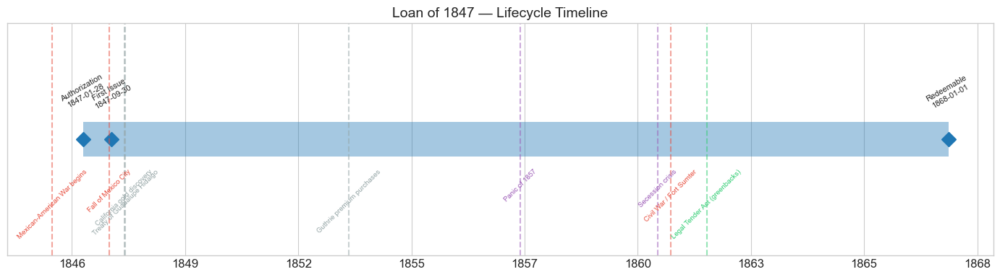
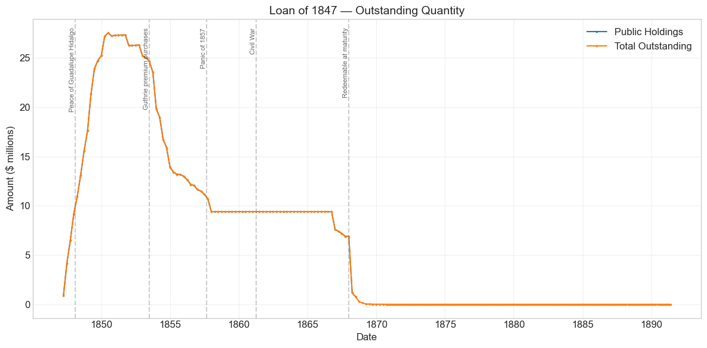
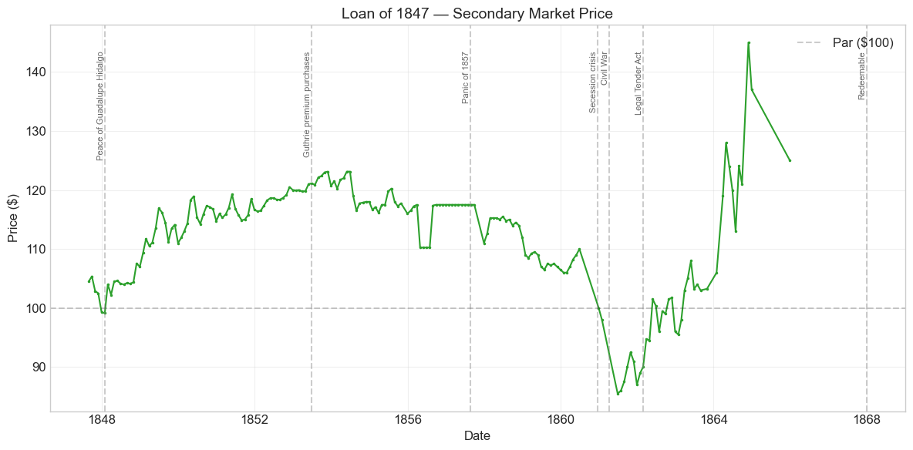
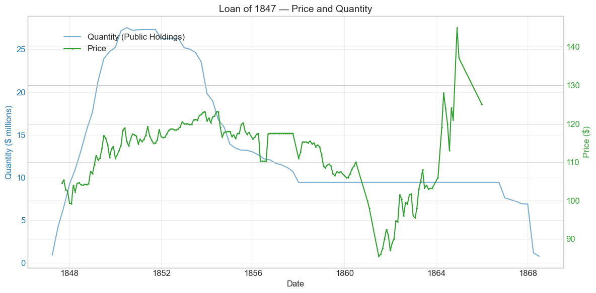
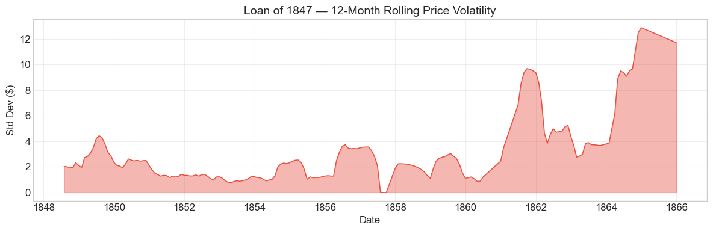

Bond Biography: Loan of 1847#
The Bond That Paid for a War with Credit#
An enhanced chapter from the Hall-Payne-Sargent US Federal Bond Database (2,857 issues, 1776–1960)
Bond ID (L1): 20089 | Category: Interest Bearing > Marketable > Long Term Bond
import pandas as pd
import numpy as np
import matplotlib.pyplot as plt
import matplotlib.patches as mpatches
import datetime
import warnings
warnings.filterwarnings('ignore')
plt.style.use('seaborn-v0_8-whitegrid')
plt.rcParams.update({'figure.figsize': (12, 6), 'font.size': 12,
'axes.titlesize': 14, 'axes.labelsize': 12})
# Load the bond database
store = pd.HDFStore('../data/BondDF.h5', mode='r')
BondList = store['BondList']
BondQuant = store['BondQuant']
BondPrice = store['BondPrice']
store.close()
BondQuant_T = BondQuant.transpose()
BondPrice_T = BondPrice.transpose()
bond_id = 20089
print(f'Loaded data for: Loan of 1847 (ID: 20089)')
/Users/thomassargent/anaconda3/lib/python3.9/site-packages/pandas/core/arrays/masked.py:60: UserWarning: Pandas requires version '1.3.6' or newer of 'bottleneck' (version '1.3.5' currently installed).
from pandas.core import (
Loaded data for: Loan of 1847 (ID: 20089)
Overview#
The Loan of 1847 was authorized by the Act of January 28, 1847, first issued on September 30, 1847, and carried a 6.0% coupon payable semi-annually in coin. It was a twenty-year stock — the largest of the loans that financed the Mexican-American War. During its lifetime on the secondary market, the bond’s average price was $112.12, ranging from $85.50 to $145.00 (based on 193 monthly observations from August 1847 to December 1865). Peak outstanding reached $27.55 million on June 30, 1850, and the debt was retired principally in 1867–68.
If the Loan of 1842 (Bond ID 20083, the preceding chapter in this collection) is the story of American federal credit at its nadir, the Loan of 1847 is the story of that credit put to work. Five years earlier, with eight states in default and European bankers refusing to touch anything labeled “American,” the Treasury had been forced to sell a peacetime 6 per cent coin bond at a discount. In 1847 the same government sold a much larger 6 per cent loan — in the middle of a foreign war — at a premium (the database records a price sold of 1.0125, about 101¼ per $100 of face value). Nothing in the intervening years had changed the arithmetic of a 6 per cent coin coupon; what had changed was the issuer’s standing, restored by the revenue recovery after 1843 and by an unbroken record of punctual payment.
The political setting was distinctive. President James K. Polk’s war with Mexico, declared in May 1846, was financed under Treasury Secretary Robert J. Walker mostly by borrowing rather than by taxes. Two 1846 statutes framed the fiscal regime: the Walker Tariff (July 1846) cut duties on free-trade principles, so the administration had no intention of raising wartime tax rates, and the Independent Treasury Act (August 1846) required the government to hold and pay out its funds in specie through its own sub-treasuries, keeping public money out of the banks. War expenditure therefore had to be met by a rapid succession of Treasury notes and funded loans — the Loans of 1846, 1847, and 1848 — of which the Act of January 28, 1847 was the centerpiece: it authorized $23 million of borrowing, in Treasury notes convertible at the holder’s option into twenty-year 6 per cent stock. The conversion privilege proved popular, and the funded stock ultimately grew beyond the original $23 million as notes were exchanged for bonds — the database’s peak of $27.55 million records the result.
The loan sold well, the war went well, and the bond then lived on for two decades: through the golden surpluses of the early 1850s, when the Treasury bought it back at prices above 120; through the Panic of 1857, which ended the buybacks; through the secession winter, which drove it below 90; and through the Civil War, when its coin coupons made it a favorite in a depreciating paper currency. It was redeemed, on schedule, by the postwar Treasury in 1867–68. This is the biography of the bond that proved the restored credit of 1843 was strong enough to carry a war.
Historical Context#
The following major events occurred during this bond’s lifetime:
Date |
Event |
Category |
|---|---|---|
1846-04-25 to 1848-02-02 |
Mexican-American War |
War |
1846-07-30 |
Walker Tariff |
Legislation |
1846-08-06 |
Independent Treasury Act |
Legislation |
1847-03-09 / 1847-09-14 |
Veracruz landing / fall of Mexico City |
War |
1848-01-24 |
California gold discovery (Gold Rush follows) |
Other |
1848-02-02 |
Treaty of Guadalupe Hidalgo |
Other |
1853–1857 |
Treasury premium purchases out of surplus (Secretary Guthrie) |
Other |
1857-08-24 to 1858 |
Panic of 1857 |
Crisis |
1860-11 to 1861-04 |
Secession crisis |
Crisis |
1861-04-12 to 1865-04-09 |
Civil War |
War |
1862-02-25 |
Legal Tender Act (greenbacks) |
Legislation |
1863-02-25 / 1864-06-03 |
National Banking Acts |
Legislation |
1867–1868 |
Redemption at and after maturity |
Other |
War finance without war taxes#
The Mexican War cost the federal government on the order of $60–75 million in direct military expenditure — modest beside the Civil War, enormous beside the peacetime budgets of the 1840s. Polk and Walker chose to pay for it almost entirely with debt. The Walker Tariff of 1846 was a revenue tariff at reduced rates, and although customs receipts held up better than critics predicted, the administration proposed no significant new taxation. The Independent Treasury, restored in August 1846, added a mechanical constraint: the government received and disbursed only specie (and its own Treasury notes), so a large loan meant physically moving coin into the sub-treasuries. Contemporaries feared this would drain the banks and make war borrowing impossible. In practice the Treasury paid the coin out to contractors and troops as fast as it came in, and the machinery worked — but it made the marketing of the loans, in installments matched to expenditure, a matter of careful management.
Three borrowings carried the burden: the Loan of 1846 ($10 million act of July 22, 1846), this loan under the Act of January 28, 1847 ($23 million of notes-or-stock), and the war’s final loan of 1848 ($16 million, treated in the following chapter). The 1847 act’s hybrid design — Treasury notes bearing interest, convertible into twenty-year 6 per cent stock — let short-term paper issued at the war’s cash-hungry moments be funded into long bonds as fast as holders found the conversion attractive. With the stock soon quoted above par, conversion was attractive indeed, and the funded loan swelled quarter by quarter through 1849–50 even after the fighting stopped.
How the war read in the price series#
The bond’s market debut in August–September 1847 at 104½–105⅜ came with General Scott’s army already ascendant — Veracruz had fallen in March and Mexico City fell on September 14, 1847. The only wartime wobble in the series is the dip to about 99 in December 1847–January 1848, when heavy remaining note supply and year-end money-market stringency briefly pushed the price to par; the Treaty of Guadalupe Hidalgo (February 2, 1848) and the certainty of peace restored the premium within weeks. Compare 1814, when war drove federal 6s to 75, or 1842, when peacetime 6s could not be sold at par: a war loan that barely touched par at its worst moment was itself the measure of how completely federal credit had recovered.
Secession, greenbacks, and the coin hedge#
The bond’s worst days came not from Mexico but from within. Quotations sagged to 100 in December 1860 as South Carolina seceded, to 98 in January 1861, and to 85½ in June 1861 — the lifetime low — as the scale of the coming war became clear. Recovery followed the Union’s financial mobilization, but with a twist: after the Legal Tender Act (February 25, 1862) suspended specie convertibility and made greenbacks lawful money, New York bond quotations were effectively in depreciating paper, while this bond’s principal and interest remained payable in coin. The spectacular late-war prices — 145 in November 1864 — therefore mix genuine Union credit with the premium on gold over greenbacks, and must be read as currency prices of a coin asset rather than as a change in the bond’s real standing. The last quotation, 125 in December 1865, still embeds a substantial gold premium.
# Bond Lifecycle Timeline
fig, ax = plt.subplots(figsize=(14, 4))
# Key dates
dates = [('Authorization', '1847-01-28'), ('First Issue', '1847-09-30'), ('Redeemable', '1868-01-01')]
events = [('Mexican-American War begins', '1846-04-25', 'war'), ('Fall of Mexico City', '1847-09-14', 'war'), ('Treaty of Guadalupe Hidalgo', '1848-02-02', 'other'), ('California gold discovery', '1848-01-24', 'other'), ('Guthrie premium purchases', '1853-06-30', 'other'), ('Panic of 1857', '1857-08-24', 'crisis'), ('Secession crisis', '1860-12-20', 'crisis'), ('Civil War / Fort Sumter', '1861-04-12', 'war'), ('Legal Tender Act (greenbacks)', '1862-02-25', 'legislation')]
import matplotlib.dates as mdates
from datetime import datetime
# Plot bond lifetime bar
d0 = datetime.strptime(dates[0][1], '%Y-%m-%d')
d1 = datetime.strptime(dates[-1][1], '%Y-%m-%d')
ax.barh(0, (d1 - d0).days, left=mdates.date2num(d0), height=0.3,
color='#1f77b4', alpha=0.4, label='Bond Lifetime')
# Mark key dates
for label, date_str in dates:
d = datetime.strptime(date_str, '%Y-%m-%d')
ax.plot(mdates.date2num(d), 0, 'D', color='#1f77b4', markersize=10)
ax.annotate(f'{label}\n{date_str}', (mdates.date2num(d), 0.25),
ha='center', va='bottom', fontsize=8, rotation=30)
# Mark historical events
colors = {'war': '#e74c3c', 'crisis': '#9b59b6', 'legislation': '#2ecc71', 'other': '#95a5a6', 'monetary': '#f39c12'}
for name, date_str, cat in events:
d = datetime.strptime(date_str, '%Y-%m-%d')
ax.axvline(mdates.date2num(d), color=colors.get(cat, 'gray'), alpha=0.5, linestyle='--')
ax.annotate(name, (mdates.date2num(d), -0.25), ha='center', va='top',
fontsize=7, rotation=45, color=colors.get(cat, 'gray'))
ax.set_yticks([])
ax.xaxis.set_major_formatter(mdates.DateFormatter('%Y'))
ax.set_title('Loan of 1847 — Lifecycle Timeline')
ax.set_ylim(-1, 1)
plt.tight_layout()
plt.show()

Bond Features#
Feature |
Detail |
|---|---|
Name |
Loan of 1847 |
Authorizing Act |
January 28, 1847 |
Authorization Date |
January 28, 1847 |
First Issue Date |
September 30, 1847 |
Term |
20 years |
Redeemable |
After twenty years (in practice, retired 1867–68) |
Coupon Rate |
6.0% |
Payment Frequency |
Semi-annual |
Callable |
No |
Payable in Coin |
Yes |
Authorized Amount |
$23 million under the act (funded stock grew larger via note conversion) |
Peak Outstanding |
$27.55 million (June 30, 1850) |
Price Sold |
1.0125 (about 101¼ per $100 of face value) |
Two features carry the story. First, the convertibility design: the Act of January 28, 1847 authorized $23 million that could take the form either of interest-bearing Treasury notes or of twenty-year 6 per cent stock, with notes convertible into the stock at the holder’s option. This let the Treasury raise cash quickly with notes during the war and fund them into long bonds afterward — which is why the quantity series keeps climbing for two years after the peace, and why the funded total came to exceed the act’s original $23 million as outstanding notes were exchanged for bonds.
Second, the premium sale. The database records a price sold of 1.0125 — a wartime 6 per cent loan going off above par. Set beside the Loan of 1814 (sold in a desperate market at deep discounts) and the Loan of 1842 (a peacetime 6 sold at 97½ because Europe would not touch it), the figure is the arc’s payoff: within five years of being told it “could not borrow a dollar” abroad, the United States was selling war debt at a premium, with foreign buyers returning to the book.
# Display full bond features from database
row = BondList.loc[20089]
display_cols = [
"Treasury's Name Of Issue", 'Authorizing Act', 'Term Of Loan',
'First Issue Date', 'First Redemption Date', 'Final Redemption Date',
'Coupon Rate', 'Coupons Per Year', 'Callable', 'Coin',
'Authorized Amount', 'Price Sold'
]
print('Bond Features from Database:')
print('=' * 55)
for col in display_cols:
if col in row.index:
print(f' {col:<30} {row[col]}')
Bond Features from Database:
=======================================================
Treasury's Name Of Issue Loan of 1847
Authorizing Act January 28, 1847
Term Of Loan 20 years
First Issue Date 1847-09-30 00:00:00
First Redemption Date NaT
Final Redemption Date NaT
Coupon Rate 6.0
Coupons Per Year 2.0
Callable 0.0
Coin 1.0
Authorized Amount nan
Price Sold 1.0125
Bond Quantity Over Time#
The bond’s outstanding quantity peaked at $27.55 million on June 30, 1850. Public-holdings data span from March 31, 1847 to June 30, 1868 (86 quarterly observations), with small unredeemed residuals lingering in the “Total Outstanding” series for decades afterward.
# Bond quantity over time
fig, ax = plt.subplots(figsize=(12, 6))
for stype in ['Public Holdings', 'Total Outstanding']:
try:
s = BondQuant_T.loc[(20089, stype)]
s = s[s.notna()]
if len(s) > 0:
ax.plot(s.index, s.values / 1e6, marker='.', markersize=3, linewidth=1.5, label=stype)
except KeyError:
pass
ax.set_title('Loan of 1847 — Outstanding Quantity')
ax.set_xlabel('Date')
ax.set_ylabel('Amount ($ millions)')
ax.legend()
ax.grid(True, alpha=0.3)
events = {'1848-02-02': 'Peace of Guadalupe Hidalgo', '1853-06-30': 'Guthrie premium purchases', '1857-08-24': 'Panic of 1857', '1861-04-12': 'Civil War', '1868-01-01': 'Redeemable at maturity'}
for date_str, label in events.items():
d = pd.Timestamp(date_str)
ax.axvline(d, color='gray', alpha=0.4, linestyle='--')
ax.text(d, ax.get_ylim()[1]*0.97, label, rotation=90, va='top', ha='right', fontsize=8, alpha=0.7)
plt.tight_layout()
plt.show()

Quantity Analysis#
The quantity series tells the loan’s story in four movements.
Wartime placement and postwar funding (1847–1850). The stock came out in installments matched to the war’s cash needs: $0.9 million by March 1847, $4.2 million by June, $9.2 million by year-end, $17.7 million by the end of 1848. Note the contrast with 1842, when $8 million took the better part of a year to place in a hostile market — here three times that sum went out in two years, at a premium. The climb continues well past the February 1848 peace, reaching $27.55 million by mid-1850, because the act’s convertible Treasury notes were still being funded into the twenty-year stock: holders of short war paper exchanged it for a premium bond, and the funded debt grew even as no new money was being borrowed.
Premium purchases out of surplus (1851–1857). From late 1851, and in earnest from 1853, the balance falls: $25 million at the end of 1852, $19.8 million a year later, $13.9 million by the end of 1854, and $9.4 million by the end of 1857. This is the same program described in the Loan of 1842 chapter: tariff revenues swollen by the prosperity (and gold) of the early 1850s gave the Treasury persistent surpluses, and Secretary James Guthrie in particular used them to buy government bonds in the open market at substantial premiums — this bond was then quoted around 117–123, so the Treasury was paying roughly a fifth over face to retire its own 6s. Roughly $18 million of the issue, some two-thirds of the peak, was retired this way.
The frozen decade (1858–1866). The purchases stop abruptly with the Panic of 1857, which collapsed customs revenue and turned the surplus into deficit. The balance then sits at $9,415,250 — to the dollar — from 1860 through the third quarter of 1866. Through the entire Civil War, while the Treasury borrowed thousands of millions through five-twenties, seven-thirties, and greenbacks, this old coin bond was simply left outstanding, its coupons punctually paid in specie.
Redemption (1866–1868). The stock was redeemable after twenty years. The series shows the Treasury beginning to take it in during late 1866–67 (down to $6.9 million by the end of 1867) and then retiring the great bulk in early 1868 — $1.2 million left by March, $0.76 million by June, under $0.3 million by the fall. The small residuals that dwindle through the 1870s and 1880s (a few thousand dollars, ultimately under $1,000) are certificates never presented for payment — the usual tail in nineteenth-century loan accounts, not a default. That a Treasury simultaneously managing a $2.7 billion war debt paid off this Mexican War relic at par in coin, on schedule, was of a piece with the redemption discipline it had shown the Loan of 1842 in 1863.
Secondary Market Prices#
Overall Statistics (1847-08-31 to 1865-12-31): Mean $112.12, Range $85.50–$145.00, Std Dev $9.17, 193 observations.
By Period:
Period |
Approx. Range |
Character |
|---|---|---|
1847–1848 (war and peace) |
99–107½, trough ~99 (Dec 1847–Jan 1848) |
Premium debut; brief sag to par under note supply and year-end stringency; recovery on peace |
1849–1853 |
109 → 123 |
Gold, surpluses, falling yields; long premium climb |
1854–1857 (to the Panic) |
~110–123, increasingly flat |
Guthrie buybacks shrink the float; quotations thin and turn nominal |
1857–1860 |
100–115¾ |
Post-panic step down, then slow drift as maturity nears |
1860–1861 |
85½–100 |
Secession sag; lifetime low of 85½ in June 1861 |
1862–1865 |
87 → 145 |
Recovery in a depreciating paper currency; coin bond quoted in greenbacks |
The debut deserves a moment’s attention. The first quotations, 104½ in August 1847 and 105⅜ in September, stand comfortably above both par and the 101¼ average sale price — buyers of the loan were in profit from the start, the mirror image of the grudging, below-par placement of 1842. And the wartime minimum of roughly 99, touched for two months around the turn of 1848, is higher than the price at which the 1842 loan had to be sold in peacetime. The market’s verdict on five years of fiscal recovery could hardly be more legible.
# Annotated price chart
fig, ax = plt.subplots(figsize=(12, 6))
s = BondPrice_T.loc[(20089, 'Average')]
s = pd.to_numeric(s, errors='coerce').dropna()
if len(s) > 0:
ax.plot(s.index, s.values, marker='.', markersize=3, linewidth=1.5, color='#2ca02c')
ax.axhline(100, color='black', alpha=0.2, linestyle='--', label='Par ($100)')
ax.set_title('Loan of 1847 — Secondary Market Price')
ax.set_xlabel('Date')
ax.set_ylabel('Price ($)')
ax.legend()
ax.grid(True, alpha=0.3)
events = {'1848-02-02': 'Peace of Guadalupe Hidalgo', '1853-06-30': 'Guthrie premium purchases', '1857-08-24': 'Panic of 1857', '1860-12-20': 'Secession crisis', '1861-04-12': 'Civil War', '1862-02-25': 'Legal Tender Act', '1868-01-01': 'Redeemable'}
for date_str, label in events.items():
d = pd.Timestamp(date_str)
ax.axvline(d, color='gray', alpha=0.4, linestyle='--')
ax.text(d, ax.get_ylim()[1]*0.97, label, rotation=90, va='top', ha='right', fontsize=8, alpha=0.7)
plt.tight_layout()
plt.show()

# Price and Quantity — dual-axis chart
fig, ax1 = plt.subplots(figsize=(12, 6))
# Quantity (left axis)
for stype in ['Public Holdings', 'Total Outstanding']:
try:
q = BondQuant_T.loc[(20089, stype)]
q = q[q.notna()]
if len(q) > 0:
ax1.plot(q.index, q.values / 1e6, color='#1f77b4', alpha=0.6, label=f'Quantity ({stype})')
break
except KeyError:
pass
ax1.set_xlabel('Date')
ax1.set_ylabel('Quantity ($ millions)', color='#1f77b4')
ax1.tick_params(axis='y', labelcolor='#1f77b4')
# Price (right axis)
ax2 = ax1.twinx()
p = BondPrice_T.loc[(20089, 'Average')]
p = pd.to_numeric(p, errors='coerce').dropna()
if len(p) > 0:
ax2.plot(p.index, p.values, color='#2ca02c', marker='.', markersize=2, label='Price')
ax2.set_ylabel('Price ($)', color='#2ca02c')
ax2.tick_params(axis='y', labelcolor='#2ca02c')
ax1.set_title('Loan of 1847 — Price and Quantity')
ax1.grid(True, alpha=0.3)
fig.legend(loc='upper left', bbox_to_anchor=(0.1, 0.9))
plt.tight_layout()
plt.show()

Detected Price/Quantity Events#
The following significant movements were auto-detected in the data, with causal interpretation:
Date |
Type |
Change |
Interpretation |
|---|---|---|---|
1847-06 |
quantity increase |
+364.6% |
Wartime placement in earnest: from $0.9M to $4.2M as installments under the January 1847 act were called in to pay for Scott’s campaign. A percentage artifact of a small base, not a market event. |
1847-09 |
quantity increase |
+55.8% |
Continued placement ($6.5M outstanding) as the campaign climaxed with the fall of Mexico City (September 14). The auto-matcher’s “Gold Rush” label is spurious — gold was not discovered until January 1848, and news reached the East only late that year. |
1847-12 |
quantity increase |
+41.5% |
Further installments and note conversions ($9.2M). Again unrelated to gold. |
1849-03 |
quantity increase |
+20.8% |
Postwar funding: holders of the act’s convertible Treasury notes exchanging them for the premium twenty-year stock ($21.3M outstanding). |
1856-04 |
price drop |
-6.2% |
Almost certainly not news. The series steps down to a constant 110¼ for four months, then steps back. By 1856 the Guthrie buybacks had cut the float in half and genuine transactions were scarce; these look like stale or nominal dealer quotations, and we decline to invent a story for them. |
1856-08 |
price spike |
+6.5% |
The mirror of the April “drop” — the quotation returns to the 117–117½ level where it then sits, suspiciously unchanged, for over a year. Thin-market artifacts, not events. |
1857-12 |
price drop |
-5.5% |
The Panic of 1857. Note the series is frozen at 117½ from early 1857 through September and then gaps to December — the printed quotes likely lagged the market, and the December level of 111 records the post-panic repricing all at once. |
1860-12 |
price drop |
-9.1% |
Secession. South Carolina left the Union on December 20; the bond, quoted at 110 in June, reappears at exactly 100 in December after a six-month gap in quotations. |
1861-06 |
price drop |
-12.8% |
War in earnest. The 85½ of June 1861 — the lifetime low — prices real doubt about the Union’s finances in the months between Sumter and the organization of Civil War borrowing. |
1862-03 |
price spike |
+5.3% |
Two forces, not cleanly separable: Union military successes in the West (Forts Henry and Donelson, February 1862) improved genuine credit, while the Legal Tender Act (February 25) began depreciating the paper currency in which the bond was quoted — a coin bond’s greenback price rises on both counts. |
The caution flagged for the mid-1850s deserves emphasis. Between 1854 and 1857 the price series flattens into long runs of identical figures (117½ for month after month) punctuated by implausible steps. As the float shrank from $16 million toward $9 million, this bond traded rarely, and the quotations look increasingly like standing dealer marks rather than fresh transactions. Movements — and non-movements — in that stretch should be read accordingly.
Price Volatility#
Maximum drawdown: -30.6% (from the peak of $123.13 on November 30, 1853 to the trough of $85.50 on June 30, 1861)
Average monthly return: 0.137%
As with the Loan of 1842, the drawdown statistic is instructive for how long it took to unfold: nearly eight years separate peak from trough, and the descent came in steps — the end of the buyback bid and the Panic of 1857, the drift of 1858–60 as the bond aged toward maturity, and finally the secession collapse. The trough, unlike 1842’s, went deep: 85½ against the older bond’s floor of 95, largely because in mid-1861 this bond still had over six years to run while the 1842 loan was within eighteen months of a coin payoff. Time to maturity, in a crisis, is exposure.
The volatility chart below is dominated by the two ends of the bond’s life: the 1848–49 postwar repricing, and above all the Civil War years, when swings of five to ten points a month in the greenback price of a coin bond became routine — much of that motion being the currency’s, not the bond’s. The eerily quiet mid-1850s partly reflect genuine stability under the Treasury’s standing premium bid, and partly the thin, nominal quotations discussed above.
# Rolling volatility (12-month window)
p = BondPrice_T.loc[(20089, 'Average')]
p = pd.to_numeric(p, errors='coerce').dropna()
if len(p) >= 12:
rolling_std = p.rolling(window=12).std().dropna()
fig, ax = plt.subplots(figsize=(12, 4))
ax.fill_between(rolling_std.index, rolling_std.values, alpha=0.4, color='#e74c3c')
ax.plot(rolling_std.index, rolling_std.values, color='#e74c3c', linewidth=1)
ax.set_title('Loan of 1847 — 12-Month Rolling Price Volatility')
ax.set_xlabel('Date')
ax.set_ylabel('Std Dev ($)')
ax.grid(True, alpha=0.3)
plt.tight_layout()
plt.show()
else:
print('Insufficient data for rolling volatility (need >= 12 observations)')

Issuance, Distribution, and Redemption#
The bond was originally sold at 1.0125 — about 101¼ per $100 of face value on average.
How it was sold. The Treasury advertised for bids and placed the loan through the sub-treasury machinery, in installments, with a large share going to banking houses and brokers who resold to the public — a very different affair from the direct, grudging subscriptions of 1842. The Washington banking house of Corcoran & Riggs took the leading role: William W. Corcoran, well connected to Secretary Walker and the Polk administration, bid for and won large blocks of the war loans of 1847 and 1848 and distributed them onward at a profit through correspondent brokers in New York, Philadelphia, Boston, and Baltimore. Banks, insurance companies, trustees, and private investors in the northeastern cities were the ultimate domestic holders.
The return of Europe. The most historically consequential feature of the distribution was foreign. Corcoran carried substantial blocks of the war 6s to London, where — in cooperation with established houses, the Barings among them — they were placed with British and Continental investors. These were among the first significant sales of United States federal securities in Europe since the state-default scandal of the early 1840s had closed that market; the same London that had refused the Loan of 1842 outright was, by 1848, buying American war debt at a premium. Precise allocation figures vary by source and we do not press them here; the direction of the change is beyond dispute, and it mattered. The re-entry of American federal bonds into European portfolios in 1847–48 reopened a channel that the Union would need desperately, and use, in the 1860s.
Notes into bonds. A distinctive share of the “issuance” was not sold for cash at all but exchanged: the Act of January 28, 1847 made its Treasury notes convertible into this stock, and with the stock at a premium the conversion was steadily exercised. That is why the funded amount kept growing through 1849–50, to $27.55 million, after the war and its cash needs had ended.
How it lived. Once placed, the stock became a standard premium investment of the 1850s, and its largest single buyer was the issuer: the Treasury’s surplus-revenue purchases retired roughly two-thirds of the issue between 1851 and 1857 at prices ranging up to the low 120s (see the Quantity Analysis above). The $9.4 million that survived the Panic of 1857 then sat untouched through the Civil War, its semi-annual coin coupons paid in gold throughout the greenback era — which is precisely what the soaring currency quotations of 1862–65 were pricing.
How it ended. The stock was redeemable after twenty years. The Treasury began taking in certificates in late 1866 and 1867 and retired the great bulk of the loan in early 1868, at par in coin, in the midst of the postwar machinery of refunding and contraction that was then managing a $2.7 billion debt. Small residuals — certificates never presented — linger in the accounts for decades, dwindling to under $1,000: the ordinary archaeology of a nineteenth-century loan, not a blemish on it.
Implications and Legacy#
The Loan of 1847 was the largest single borrowing of the United States between the War of 1812 and the Civil War, and its serene passage through a foreign war is the point of its story.
It proved the recovered credit was usable. The restoration of federal credit after 1843, chronicled in the Loan of 1842 chapter, might have been a fair-weather phenomenon. The 1847 loan tested it under load: a government fighting a war two thousand miles from its capital, constrained by the Independent Treasury to move actual coin, declining to raise wartime taxes, sold $27 million of twenty-year 6s at a premium. The contrast with 1814 — when a richer, more populous Union at war sold its 6s at discounts that Bayley tabulated with embarrassment — and with 1842 is the cleanest measure in the database of what a reputation is worth.
It settled the American template for war finance. Borrow for the emergency, in coin-payable long bonds sold at market; fund the short paper into the long; retire the debt from postwar surpluses. Polk and Walker’s practice — including the criticism it drew for favoritism toward well-connected contractors like Corcoran — rehearsed, on a small stage, both the methods and the controversies of Chase and Cooke in the 1860s.
It reopened Europe. The London placements of the war 6s ended the five-year exile of American federal credit from European markets. Foreign investors who bought the 1847 and 1848 loans at 101–104 and were paid punctually in coin, war and panic notwithstanding, were the audience — and in some cases the very holders — the Union Treasury addressed in 1861.
It showed both faces of the 1850s Treasury. The Guthrie buybacks that retired two-thirds of this issue at 20 per cent premiums were fiscal virtue and monetary necessity at once — debt reduction, and a valve for returning the Independent Treasury’s accumulating coin to the money market. The abrupt end of the program in 1857 showed the machinery’s dependence on the tariff cycle: when customs revenue collapsed, the Treasury’s bid vanished, and with it a support under the whole government bond list.
And it carried a hedge through the greenback era. From 1862 the bond’s history is a lesson in reading nineteenth-century price quotations: a coin bond quoted in depreciating paper can “rise” to 145 without its holders growing rich in gold. The database’s final quotations are currency prices of a gold asset, and the bond’s true end — redemption at par, in coin, in 1867–68, by a government that had meanwhile suspended specie payment on its notes but never on its funded debt — is the quieter and more important fact. Investors who traced this bond from the discount world of 1842 to its punctual coin redemption in 1868 had watched the United States build, test, and keep the credit that the Civil War would spend.
References#
Primary and Documentary Sources#
U.S. Congress, An Act authorizing the issue of treasury notes, a loan, and for other purposes, January 28, 1847 (9 Stat. 118).
Annual Reports of the Secretary of the Treasury, 1846–1868 (Walker, Meredith, Corwin, Guthrie, Cobb, Chase, Fessenden, McCulloch).
Bayley, R. A. (1881). The National Loans of the United States, From July 4, 1776 to June 30, 1880. Washington: Government Printing Office. (The standard loan-by-loan compendium; its account of the Mexican War loans underlies the terms cited here.)
Scholarly Works#
Payne, J., Szőke, B., Hall, G. & Sargent, T. (2025). “Costs of Financing US Federal Debt: 1791–1933.” Quarterly Journal of Economics. (Source database for all price and quantity series in this chapter.)
Hall, G. & Sargent, T. — companion studies of U.S. fiscal history using the federal bond database.
Cohen, H. (1971). Business and Politics in America from the Age of Jackson to the Civil War: The Career Biography of W. W. Corcoran. Westport: Greenwood. (On Corcoran & Riggs and the marketing of the Mexican War loans, including the London sales.)
McGrane, R. C. (1935). Foreign Bondholders and American State Debts. New York: Macmillan. (Background on the European boycott of American securities that the war loans’ London placements ended.)
General Histories#
Dewey, D. R. (1918). Financial History of the United States, 6th ed. New York: Longmans, Green and Co.
Studenski, P. & Krooss, H. E. (1952). Financial History of the United States. New York: McGraw-Hill.
Enhanced Bond Biography generated from the Hall-Payne-Sargent Bond Database. Narrative enrichment draws on Bayley (1881), Cohen (1971), McGrane (1935), Dewey (1918), and Studenski & Krooss (1952). All price and quantity figures are computed directly from the database; qualitative claims are kept to well-established facts, and thinly quoted stretches of the price series are flagged as such.